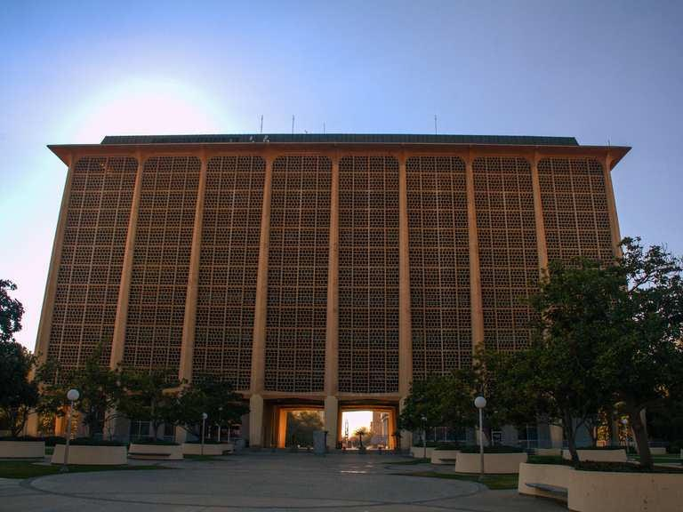
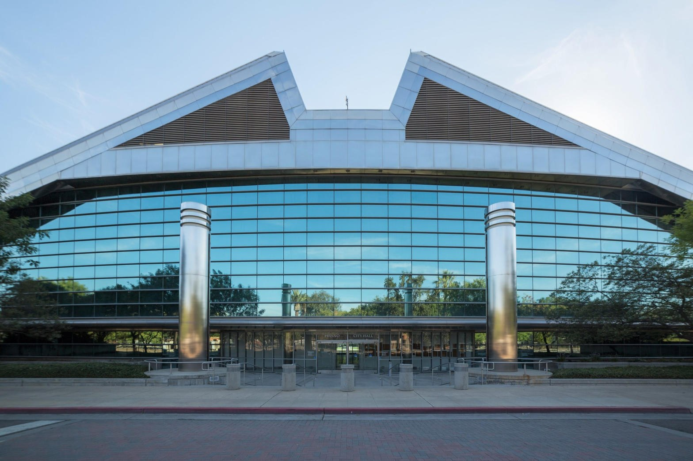
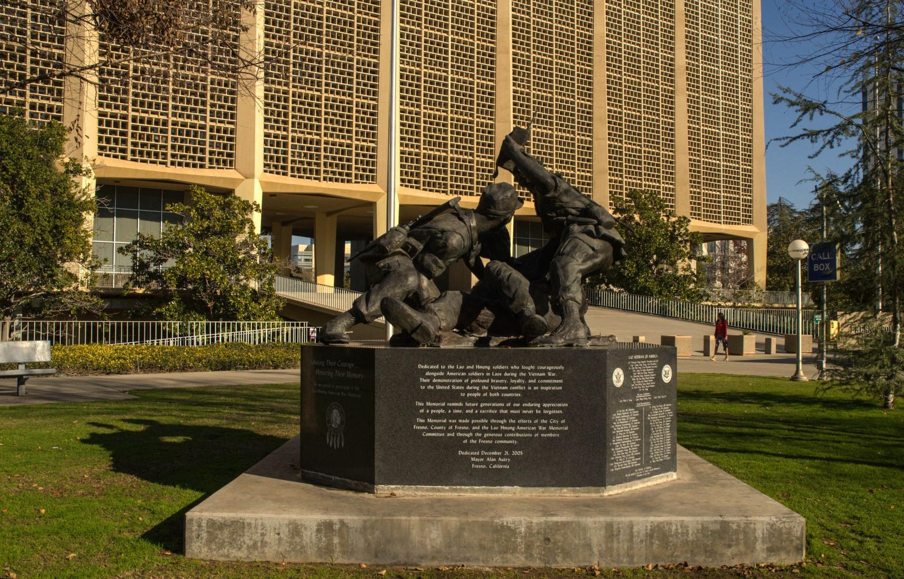
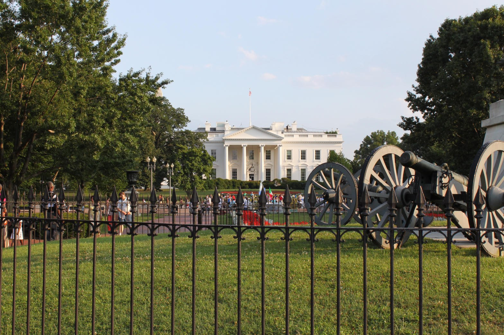

Lord, keep this hour inside the written Word and the written law. Do not let us trade either one for a slogan. Amen.
This is Friday, September 11, 2026. Twenty-five years after the towers fell, we still know what it costs a people to look the other way while predators study a city and call the study compassion. We are standing in the same county that, three weeks ago, watched a senior deputy district attorney stabbed in the back in Courthouse Park. The park is not a metaphor. It is grass and concrete around the building where the law is supposed to be applied. The sermon begins there because the text begins there.
2 Timothy 3:1-5
You should know this, Timothy, that in the last days there will be very difficult times. For people will love only themselves and their money. They will be boastful and proud, scoffing at God, disobedient to their parents, and ungrateful. They will consider nothing sacred. They will be unloving and unforgiving; they will slander others and have no self-control. They will be cruel and hate what is good. They will betray their friends, be reckless, be puffed up with pride, and love pleasure rather than God. They will act religious, but they will reject the power that could make them godly. Stay away from people like that!
Paul does not tell Timothy to hold a listening session with people like that. He does not tell him to invent a new noun so the conduct disappears. He names the pattern, then he gives the command. Stay away. The staying away is not hatred of the poor. It is refusal to share a permission slip with people who keep the costume of godliness and throw away the power that would actually stop the harm.

On August 20, in daylight, Dustin Crawford, 42, of Fresno, walked up to a senior deputy district attorney in this park and stabbed him three times in the back. District Attorney Lisa Smittcamp called it targeted, not a random act by a man the city had failed to house. The prosecutor was filming a campaign commercial. He was not armed. He was a few steps from the courthouse. The accused man has prior convictions that already included a knife, resisting arrest, and battery on a peace officer. The arraignment has been delayed while the legal community tries to find a lawyer and a judge who are not already inside the same small room. That is not a housing shortage. That is what happens when a city treats predation as weather.
The written law already knows what to do with a knife in a public park. Penal statutes on attempted murder and assault of a public official do not require a sales tax to become real. They require officers, prosecutors, and neighbors who will not look the other way. When the city council talks about homelessness as if it were a lens that turns every crime into a grant application, it is acting religious. It is keeping the form. It is rejecting the power.
The form called Measure P
Fresno voters placed a 3/8-cent sales tax on themselves and named it the Fresno Clean and Safe Neighborhood Parks Transactions and Use Tax. The city still prints the purpose in plain English. Provide clean, safe neighborhood parks. Reduce crime and homelessness in parks. Update bathrooms and playgrounds. Put money into highest-need neighborhoods. Independent oversight. Collection began in 2021. In the last completed reporting year the Measure P fund took in more than forty-six million dollars in tax. The Parks Department is projected to receive about forty-nine million in Measure P sales tax in fiscal year 2027, on top of unspent dollars rolled forward.
That is the form. Clean. Safe. Parks. Children. Seniors. After-school programs. The ordinance itself lists the reduction of crime and homelessness in parks as a lawful use of the money. Nobody who voted yes voted for a permission slip that would let a man stab a prosecutor on the lawn of the courthouse and then hear the event translated into a plea for more federal homelessness billing. Nobody who voted yes voted for a sidewalk economy in which assault is treated as proof that the city has not yet spent enough.

The optical trick is simple. Keep the park language. Keep the children's programs in the brochure. Keep the word unhoused in the mouth. Then, when a neighbor records an assault, treat the camera as the problem. When a child cannot use a park because the park has been occupied by people who consider nothing sacred, treat the parent as hard-hearted. When federal money arrives for services, bill the service whether or not a service occurred. That is how a tax that was sold as clean and safe becomes a costume. Paul already had a sentence for the costume.
Isaiah 5:20
What sorrow for those who say that evil is good and good is evil, that dark is light and light is dark, that bitter is sweet and sweet is bitter.
Three records from the street
The first record is the attorney in Courthouse Park. You do not need a theory. You have a hospital discharge, a one-million-dollar bond, charges of attempted murder and attempted murder of a public official, and a Board of Supervisors now racing to let prosecutors walk that same park with a firearm. If the only lesson a city draws from a stabbed prosecutor is that the prosecutor should have been armed, the city has learned the wrong verse. The first lesson is that the people described in 2 Timothy 3 do not intend to stop. They feel licensed. They treat the civic vocabulary of homelessness as cover.
The second record is closer to home. A gentleman across the street assaulted someone else, then announced that it was illegal to record him. That inversion is the last-days move in miniature. The act of violence is treated as private. The act of documentation is treated as the crime. California is not a state in which a man may beat a neighbor in public and then wrap himself in a privacy theory. A person who is present may record. A public sidewalk is not a confession booth. When the assailant lectures the camera, he is not defending the Constitution. He is defending the permission slip.
The third record is Ginny at 722 Blackstone. On Wednesday a police report was being taken for her assault. In the same window she was back at the same place, working the same aggressive ask, running the same routine. That is not a secret indictment. It is a neighbor's contemporaneous account of conduct that does not pause for paperwork. The report does not interrupt the hustle. The hustle treats the report as weather. If the city insists that this pattern is only housing, it will keep writing checks to a problem that is also robbery, assault, and intimidation of the people who still try to keep a store open on Blackstone.

There is a synchronicity in these three records that is not superstition. It is evidence arriving on the same week, in the same city, pointing at the same refusal. The predators are not confused. They have watched the council. They have heard the nouns. They have learned that if the conduct can be photographed as homelessness, the federal tap stays open. That is an optical lens. It is not mercy. Mercy would house the willing, treat the sick, and arrest the man with the knife.
Ephesians 5:11-13
Take no part in the worthless deeds of evil and darkness; instead, expose them. It is shameful even to talk about the things that ungodly people do in secret. But their evil intentions will be exposed when the light shines on them.
The same billing, a larger map
Nick Shirley walked into buildings that were paid as daycares and found no children. He walked into rooms billed as care and found empty floors. Some of his early claims were sloppy. Some of the centers he filmed later produced guilty pleas and federal charges. Minnesota's Feeding Our Future case alone has already produced dozens of convictions around a quarter-billion dollars in nutrition aid that was billed and not fed. Housing-stabilization and autism-service schemes followed the same template. Bill the service. Skip the service. Keep the form of help.
California is not a spectator. The state has spent more than twenty-four billion dollars on homelessness in recent years while unsheltered numbers stayed ugly and audits could not always say where the money went or what outcome it bought. HUD has suspended the Los Angeles Homeless Services Authority from federal competitions while an inspector general looks at empty hotel rooms, unverifiable housing sites, and false certifications. Federal prosecutors in Los Angeles charged an executive with taking more than twenty million in homelessness money and spending it on a Westwood house, a Range Rover, private jets, and resorts while the people on the contract were fed instant ramen. That is billing without the service. That is a form of godliness with the power denied.
Even across the broad lands of those California programs, Fresno is not exempt. Homekey conversions, point-in-time counts that change method and then announce progress, Measure P dollars that can be spent on parks while the civic story still treats street crime as a funding gap, all sit inside the same temptation. The temptation is to love the money and the appearance. The temptation is to keep the brochure and reject the statute. A city that will not report false witness in its own programs is a city that has put 2 Timothy 3 on the shelf and called the shelf compassion.
Leviticus 19:11
Do not steal. Do not deceive or cheat one another.
Proverbs 14:34
Godliness makes a nation great, but sin is a disgrace to any people.
The children are not a backdrop
The last-days list in 2 Timothy 3 includes people who consider nothing sacred. A child is sacred. A playground paid for by Measure P is supposed to be sacred in the ordinary civic sense. A neighbor who files a report because a child was placed near a known predator is doing what the written law already requires. California Penal Code 311.11 is not a vibe. It is a felony statute about the sexual exploitation of children. A city that hears that statute and then treats the hearer as the problem has chosen the predator. There is no third option. Looking the other way is a vote.
Proverbs 31:8-9
Speak up for those who cannot speak for themselves; ensure justice for those being crushed. Yes, speak up for the poor and helpless, and see that they get justice.
Notice what the text does not say. It does not say invent a program so you can avoid the court. It does not say protect the brand of the council. It says speak. It says justice for those being crushed. The crushed person may be a child who cannot use the park. The crushed person may be the clerk at 722 Blackstone. The crushed person may be the prosecutor who walked into Courthouse Park to stand next to a colleague and left in an ambulance. Justice for them is not a press conference about housing. Justice is the statute applied to the conduct.
James 1:27
Pure and genuine religion in the sight of God the Father means caring for orphans and widows in their distress and refusing to let the world corrupt you.
Pure religion holds both clauses. Care for the widow. Refuse the corruption. A city that only quotes the first clause will fund a machine that bills for care and delivers a sidewalk. A city that only quotes the second clause will become cruel. The Lord requires both. Measure P, read honestly, was an attempt at both: money for parks and programs, and an explicit purpose to reduce crime in those parks. The corruption arrives when the second purpose is treated as optional so the first purpose can keep drawing.

Do the word inside the law
James 1:22-25
But don't just listen to God's word. You must do what it says. Otherwise, you are only fooling yourselves. For if you listen to the word and don't obey, it is like glancing at your face in a mirror. You see yourself, walk away, and forget what you look like. But if you look carefully into the perfect law that sets you free, and if you do what it says and don't forget what you heard, then God will bless you for doing it.
Doing the word, in this county, on this Friday, looks like ordinary civic courage. File the report. Keep the recording when the recording is lawful. Name the statute. Refuse the new noun when the new noun is being used to hide the old crime. Vote the council that will enforce camping bans, park rules, and child-protection statutes instead of the council that needs the optics of disorder to keep a federal story alive. Stay away from the people Paul described. Do not hire them to explain compassion to you. Do not let them stand in a form of godliness and collect a draw while children lose the park.
Micah already reduced the assignment to a sentence a council member can read without a consultant.
Micah 6:8
No, O people, the Lord has told you what is good, and this is what he requires of you: to do what is right, to love mercy, and to walk humbly with your God.
Do what is right. That is the written law applied to the man with the knife, the man who assaults and then forbids the camera, and the woman who uses an assault report as a pause between asks. Love mercy. That is actual shelter and actual treatment for the person who will take it, not a billing code attached to an empty lot. Walk humbly. That is the end of the speech in which we congratulate ourselves for spending Measure P and federal homelessness money while Courthouse Park still requires a new firearms ordinance so a prosecutor can cross the grass.
Stay away from people like that. Report the false witness. Protect the children. Keep the parks clean and safe the way the ordinance already wrote it. The Lord has not asked Fresno for a new religion. He has asked this city to stop putting 2 Timothy 3 on the shelf.
Sources
- 2 Timothy 3:1-5; Isaiah 5:20; Ephesians 5:11-13; Leviticus 19:11; Proverbs 14:34; Proverbs 31:8-9; James 1:22-25; James 1:27; Micah 6:8. New Living Translation.
- City of Fresno, Measure P ordinance and parks pages. Clean and Safe Neighborhood Parks tax. Expenditure purposes include clean and safe parks and reducing crime and homelessness in parks. FY 2025 Measure P financial statements. FY 2027 parks budget remarks on projected Measure P revenue.
- Fresno Bee and ABC30, August 20 through September 10, 2026. Courthouse Park stabbing of a senior deputy district attorney. Accused: Dustin Crawford, 42. Charges of attempted murder and attempted murder of a public official. County ordinance to arm prosecutors after the attack.
- Neighbor record, Tower District and 722 Blackstone. Assault followed by a claim that recording was illegal. Wednesday police-report window in which Ginny returned to the same aggressive ask. These are contemporaneous civic observations, not a substitute for a filed charging document.
- Congressional testimony and subsequent charging news around Nick Shirley’s daycare and care-billing investigations. Minnesota Feeding Our Future convictions. HUD suspension of the Los Angeles Homeless Services Authority, June 2026. Federal complaint against Alexander Soofer and Abundant Blessings alleging diversion of homelessness funds. California State Auditor high-risk materials on homelessness spending accountability.
- Photographs: Fresno County Courthouse and Courthouse Park; Fresno City Hall exterior; National Mall and Washington Monument; White House from the public park. Real photographs only. Captions name place and role.